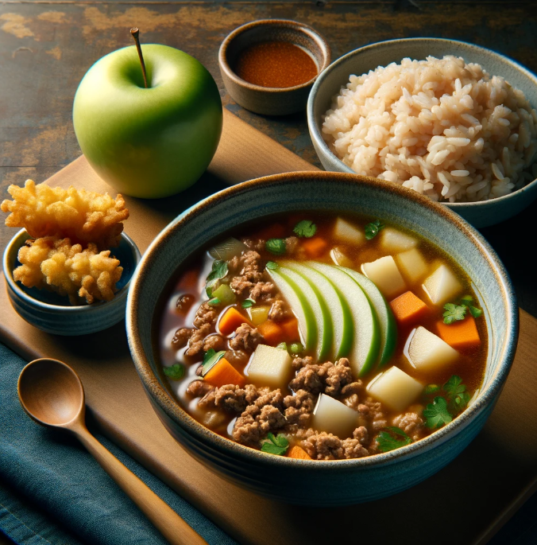

Ground Pork Picadillo Soup
Ingredients
For the picadillo:
- 1 tablespoon cooking oil
- 1 onion, chopped
- 2 cloves garlic, minced
- 1 pound ground pork
- 1/2 cup chopped carrots
- 1/2 cup chopped green beans
- 1/4 cup chopped bell pepper (optional)
- 1/4 cup tomato paste
- 1 tablespoon soy sauce
- 1/2 teaspoon salt
- 1/4 teaspoon black pepper
- 1/4 cup water
For the soup:
- 8 cups chicken broth or vegetable broth
- 2-3 potatoes, peeled and diced
- 1 cup chopped cabbage or bok choy
- Optional: 1/4 cup green peas
For the batter:
- 1 cup all-purpose flour
- 1/4 cup cornstarch
- 1/2 teaspoon baking soda
- 1 large egg, cold
- 1 cup ice-cold water
- Pinch of salt
For the vegetables:
- Assorted vegetables of your choice (e.g., broccoli florets, sweet potato strips, carrots, zucchini slices, mushrooms)
- Cooking oil for frying (vegetable oil, canola oil, peanut oil)
Nutrient:
| Nutrient |
Amount |
| Calories |
400 kcal |
| Protein |
25 g |
Brown Rice
Nutrient:
| Nutrient |
Amount |
| Calories |
216 kcal |
| Protein |
5.03 g |
| Fat |
1.76 g |
| Carbohydrates |
44.77 g |
Green Apple
Nutrient:
| Nutrient |
Amount |
| Calories |
94.6 kcal |
| Protein |
0.43 g |
| Fat |
0.3 g |
| Carbohydrates |
25.1 g |
Meal Procedure
- Heat oil in a pot over medium heat. Sauté the onion and garlic until softened, about 30 seconds.
- Crumble the ground pork into the pot and cook until browned, breaking it up with a spoon as it cooks.
- Add the carrots, green beans, and bell pepper (if using) and cook for another 2-3 minutes, or until slightly softened.
- Stir in the tomato paste, soy sauce, salt, pepper, and water. Bring to a simmer and cook for 5 minutes.
- Add the chicken broth (or vegetable broth) and potatoes to the pot. Bring to a boil, then reduce heat and simmer for 10-15 minutes, or until the potatoes are tender.
- Stir in the cabbage or bok choy and green peas (if using). Cook for an additional 2-3 minutes, or until the cabbage is wilted and the peas are heated through.
- Wash and dry the chosen vegetables. Cut them into bite-sized pieces suitable for dipping and frying.
- In a large bowl, whisk together the flour, cornstarch, and baking soda. In a separate bowl, whisk the egg and cold water. Gradually add the wet ingredients to the dry ingredients, whisking until just combined. A few lumps are okay, but avoid overmixing.
- Heat enough oil in a deep pot or Dutch oven to a temperature of 350°F (175°C).
- Dip each vegetable piece into the batter, letting excess drip off. Carefully lower the coated vegetable into the hot oil. Fry for 2-3 minutes, or until golden brown and crispy. Use tongs to flip the vegetables and ensure even cooking.
- Remove the cooked tempura from the oil and drain on paper towels to absorb excess oil.